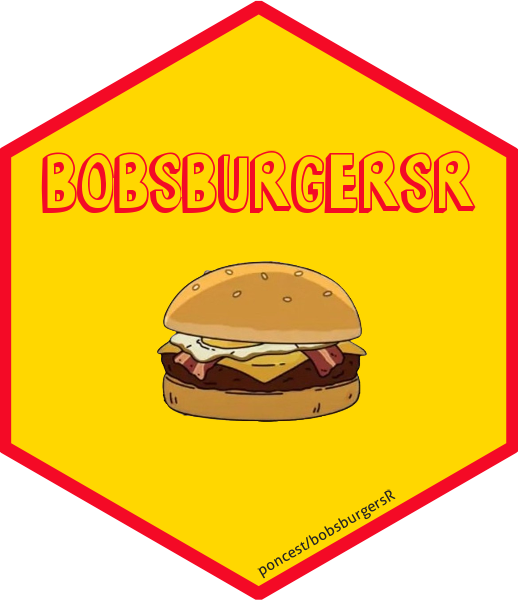

![]()
Show code
```{r}
#| label: install
#| eval: false
# install.packages("devtools")
devtools::install_github("poncest/bobsburgersR")
```Major update adds seasons 15-16, switches to TMDB ratings, and fixes transcript issues

I’m excited to announce the release of bobsburgersR v0.2.0! This update brings the package up to date with seasons 15 and 16, expanding coverage to 309 episodes across all 16 seasons of Bob’s Burgers.
The dataset now includes the latest episodes, bringing the total from 275 to 309 episodes. Transcript data has also been updated to 204,027 lines of dialogue.
The most significant change in this release is the switch from IMDb to TMDB (The Movie Database) for episode ratings. IMDb implemented bot protection in 2024 that prevents web scraping, so I migrated to TMDB’s official API.
Both rating systems use a 1-10 scale, but they come from different user communities. If you’re comparing ratings across package versions, keep this in mind.
Stay tuned for a follow-up post where I’ll explore how these TMDB ratings compare across the show’s 16-season history.
The episode_data dataset now includes:
votes — Number of TMDB user votes for each episodetmdb_id — Unique TMDB episode identifierruntime — Episode length in minutesDataset renamed: imdb_wikipedia_data is now episode_data. Update your code accordingly:
Column renamed: wikipedia_viewers is now us_viewers_millions for clarity.
Column renamed: imdb_title is now title.
Fixed carriage return characters (\r) in transcript data for seasons 13-14 that caused display issues.
Install or update from GitHub:
```{r}
#| label: install
#| eval: false
# install.packages("devtools")
devtools::install_github("poncest/bobsburgersR")
``````{r}
#| label: example
#| eval: true
library(bobsburgersR)
suppressPackageStartupMessages(library(dplyr))
data("episode_data")
# Check the data
cat("Total episodes:", nrow(episode_data), "\n")
cat("Seasons:", paste(range(episode_data$season), collapse = "-"), "\n")
# Average rating by season
episode_data |>
group_by(season) |>
summarise(
episodes = n(),
avg_rating = round(mean(rating, na.rm = TRUE), 1),
.groups = "drop"
) |>
print(n = 16)
```Total episodes: 309
Seasons: 1-16
# A tibble: 16 × 3
season episodes avg_rating
<int> <int> <dbl>
1 1 13 7.4
2 2 9 7.7
3 3 23 7.7
4 4 22 7.5
5 5 21 8
6 6 19 7.8
7 7 22 8
8 8 21 8.2
9 9 22 7.9
10 10 22 7.8
11 11 22 7.8
12 12 22 7
13 13 22 7.3
14 14 16 7.4
15 15 22 7.7
16 16 11 7.1I’ll continue updating bobsburgersR as new episodes air. If you have suggestions or find issues, feel free to open an issue on GitHub.
Check out the full changelog in NEWS.md and explore the updated package on GitHub.
```{r}
#| label: session-info
#| eval: true
sessionInfo()
```R version 4.4.1 (2024-06-14 ucrt)
Platform: x86_64-w64-mingw32/x64
Running under: Windows 11 x64 (build 26100)
Matrix products: default
locale:
[1] LC_COLLATE=English_United States.utf8
[2] LC_CTYPE=English_United States.utf8
[3] LC_MONETARY=English_United States.utf8
[4] LC_NUMERIC=C
[5] LC_TIME=English_United States.utf8
time zone: America/New_York
tzcode source: internal
attached base packages:
[1] stats graphics grDevices datasets utils methods base
other attached packages:
[1] dplyr_1.1.4 bobsburgersR_0.2.0
loaded via a namespace (and not attached):
[1] digest_0.6.37 utf8_1.2.4 R6_2.5.1 codetools_0.2-20
[5] fastmap_1.2.0 tidyselect_1.2.1 xfun_0.49 magrittr_2.0.3
[9] glue_1.8.0 tibble_3.2.1 knitr_1.49 pkgconfig_2.0.3
[13] htmltools_0.5.8.1 generics_0.1.3 rmarkdown_2.29 lifecycle_1.0.4
[17] cli_3.6.4 fansi_1.0.6 vctrs_0.6.5 renv_1.0.3
[21] compiler_4.4.0 rstudioapi_0.17.1 tools_4.4.0 pillar_1.9.0
[25] evaluate_1.0.1 yaml_2.3.10 rlang_1.1.6 jsonlite_1.8.9
[29] htmlwidgets_1.6.4@online{ponce2026,
author = {Ponce, Steven},
title = {bobsburgersR V0.2.0: {Seasons} 15-16 and {TMDB} {Ratings}},
date = {2026-01-20},
url = {https://stevenponce.netlify.app/projects/r_packages/2026-01-20-bobsburgersr-v0.2.0.html},
langid = {en}
}